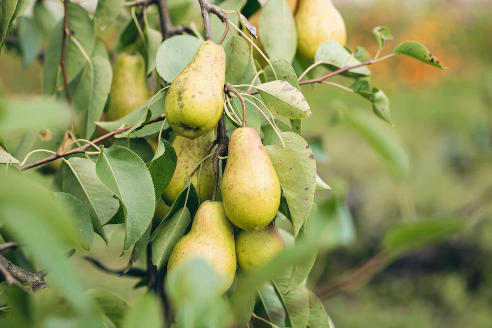
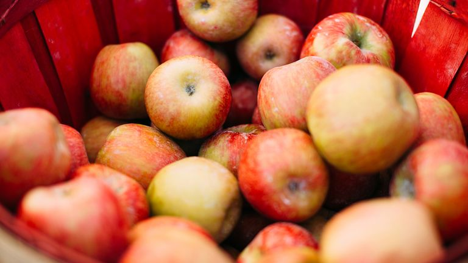
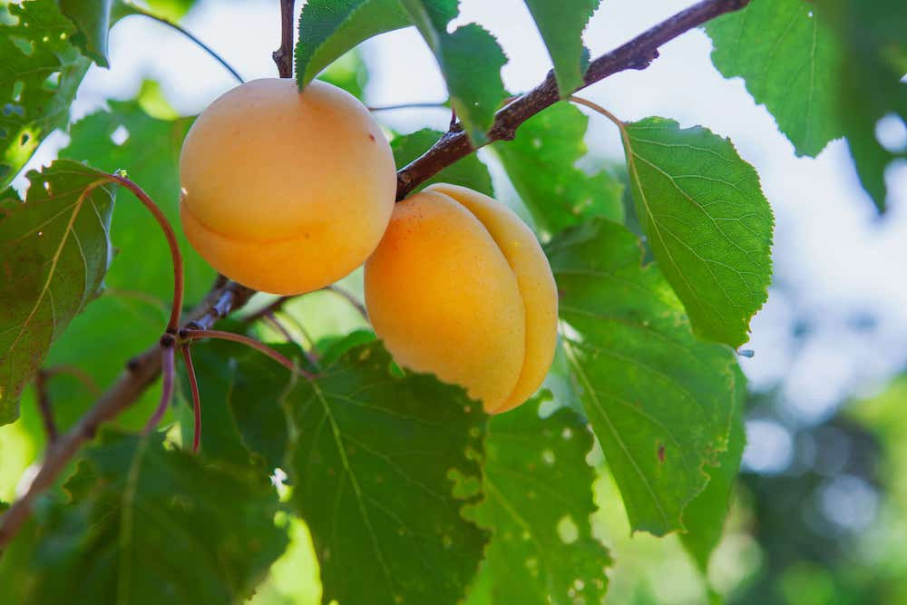

Organically Grown Fruits
Grown Fresh - Picked Fresh
Welcome to Andrew's Orchard!
We're proud to provide our customers with some of the freshest and most delicious fruit available. Our fruit is grown organically and harvested by hand at the peak of ripeness, ensuring that every piece of fruit you get from us is bursting with flavor. We have a wide variety of fruit for sale, including apples, pears, apricots, strawberries, raspberries, grapes, and plums. Whether you're looking to add a little sweetness to your breakfast routine or make an unforgettable fruit salad for your next gathering, we guarantee you'll find exactly what you need.
Delicious Pears
If you're looking for something special, try our pears. Our pears are renowned for their juicy texture and sweet flavor, with the perfect balance of acidity and sweetness. Each pear has been carefully selected by hand to ensure it is perfectly ripe and ready to eat. So don't wait - get your hands on some of these succulent pears today! We know you won't be disappointed. Our pears are all grown sustainably and hand-picked at their peak ripeness to ensure that maximum flavor and nutrition is retained during processing and transport. Plus, our products are non-GMO and pesticide free! So why wait? We look forward to seeing you soon at Andrew's Orchard! Come by and pick up some fruit today - you won't be disappointed. We guarantee your satisfaction with every purchase. Thank you for choosing Andrew's Orchard! Happy fruit shopping!
Freshly-Picked Apples
The apples that we offer are especially noteworthy. Our apples are juicy and succulent, with a crisp texture that will leave your taste buds tingling. You'll be able to tell the difference between our fruit and mass-produced produce in no time! We have a wide array of apple varieties, from Granny Smith to Golden Delicious to Honeycrisp and beyond. Whether you're looking for an all-purpose fruit or a specific type of apple, you'll find it here at Andrew's Orchard! We invite you to visit us in person and experience the freshness of our fruit firsthand. We're confident that once you try our fruit, you won't be able to go back! Stop by today and see why Andrew's Orchard is your go-to source for quality fruit.
Amazing Apricots
Finally, our apricots are some of the best fruit you'll find anywhere. They have a wonderfully intense flavor that's both sweet and tart, with a perfect balance of juiciness and firmness. We know that once you try our apricots, you'll be hooked - so come to Andrew's Orchard today and treat yourself to some of the most delicious fruit around! Our apricots come in a variety of shapes, sizes and colors. We have small, sweet apricots with bright yellow skins; larger fruit with deep orange flesh; and even purple or black varieties for those who want something a little different. We also offer white-fleshed fruit, which is milder than its colored counterparts but still deliciously juicy. No matter what you're looking for, we have an apricot to suit your taste! Happy harvesting! Andrew's Orchard Team
<"